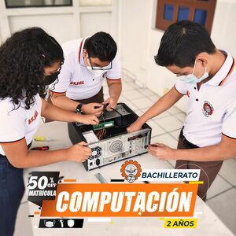
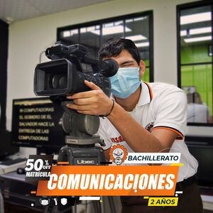
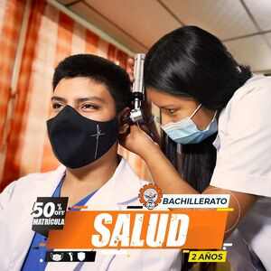

Computación (2 años)
Formar Bachilleres en sistemas Informáticos que diseñen desarrollen, implementen y automaticen sistemas tecnológicos en los ámbitos de: software, Redes y Hardware logrando adaptar las nuevas tecnologías a las necesidades que demanden las instituciones públicas o privadas desde un enfoque emprendedor, ético, humanista y con responsabilidad social.

Diseño gráfico (2 años)
Formar Bachilleres capaces de realizar proyectos gráficos que tengan como fin la comprensión de información por medio de herramientas digitales, presentándolos de una manera atractiva, compacta; y que ésta se traduzca en comunicación relevante y significativa para la sociedad.

Bilingüe (2 años)
Ofrecer una formación de calidad en idioma inglés, para obtener un nivel profesional en el campo laboral y/o educaión superior a través de una educación teórica-prácticas sustentadas en el aprendizaje activo.

comunicaciones (2 años)
Formar comunicadores en las áreas audiovisual y fotografía capaces de laborar en empresas de comunicación en los rubros de producción y realización. asi mismo brindamos las herramientas necesarias para emprender su propia empresa de comunicación.

Salud (2 años)
Formar Bachilleres competentes en el área de salud, con conocimientos sobre antropometría, inyectables y primeros auxilios, para fomentar la promoción, prevención y humanismo como pilares importantes para desempeñarse con calidad en cualquier rama de la salud.
